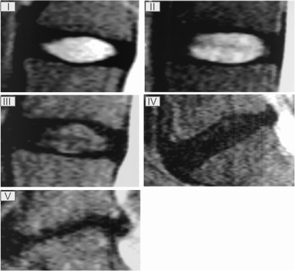

Adapted from: Pfirrmann CW, Metzdorf A, Zanetti M, et al. Magnetic resonance classification of lumbar intervertebral disc degeneration. Spine (Phila Pa 1976). 2001 Sep 1;26(17):1873-8. doi: 10.1097/00007632-200109010-00011.
Permission Required
1) Description of Measurement
The Pfirrmann Classification is a five-grade MRI-based system that characterizes lumbar intervertebral disc degeneration using disc structure, signal intensity on T2-weighted images, distinction between nucleus pulposus and annulus fibrosus, and disc height. It provides a standardized, reproducible method to quantify disc degeneration and correlate imaging findings with clinical symptoms and biomechanical deterioration
2) Instructions to Measure
3) Normal vs. Pathologic Ranges
Key points:
4) Important References
Pfirrmann CW, Metzdorf A, Zanetti M, et al. Magnetic resonance classification of lumbar intervertebral disc degeneration. Spine (Phila Pa 1976). 2001 Sep 1;26(17):1873-8. doi: 10.1097/00007632-200109010-00011.
Miyazaki M, Hong SW, Yoon SH, et al. Reliability of a magnetic resonance imaging-based grading system for cervical intervertebral disc degeneration. J Spinal Disord Tech. 2008 Jun;21(4):288-92. doi: 10.1097/BSD.0b013e31813c0e59.
Griffith JF, Wang YX, Antonio GE, et al. Modified Pfirrmann grading system for lumbar intervertebral disc degeneration. Spine (Phila Pa 1976). 2007 Nov 15;32(24):E708-12. doi: 10.1097/BRS.0b013e31815a59a0.
5) Other info....
Grading is performed on T2-weighted mid-sagittal images, as disc hydration best reflects degeneration.
The Pfirrmann system demonstrates excellent inter- and intraobserver reliability (κ ≈ 0.69–0.90).
In equivocal cases, integrate disc height, nucleus signal, and structure together rather than relying on a single feature.